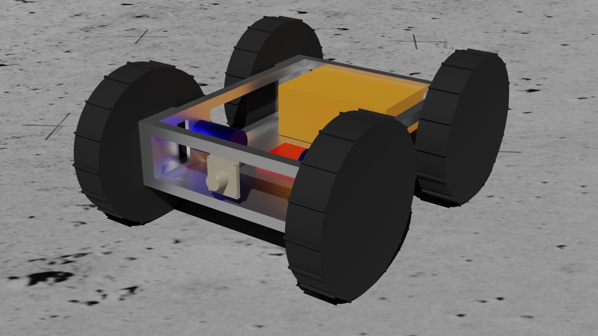

About This Site
The purpose of this server is to display information from the SPELUNCR rover on any device that can run a web browser. This approach has several advantages. One such advantage is that the web interface is widely supported out-of-the-box on many devices and this eliminates the hastle of building and installing custom software for devices that wish to view SPELUNCR's data in real time. Another advantage is that it utilizes well established and documented networking technologies. The use of HTML, CSS, and JavaScript allow relatively easy development, testing, and modifications of this interface.
